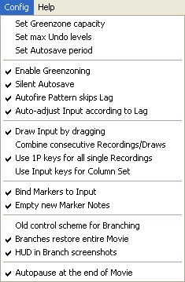

Настройка программы
Некоторые полезные функции Тасэдитора по умолчанию отключены, так как перед их использованием нужно понять принцип их работы. В этой главе описаны все настройки инструмента, а также настройки эмулятора FCEUX, которые влияют на работу в Тасэдиторе.
Настройки хранятся в файле fceux.cfg в папке эмулятора. Если вы удалите этот файл, при следующем запуске FCEUX все настройки сбросятся на значения по умолчанию.
Для начала, если вы уже прочитали главу 2 и поняли назначение всех элементов интерфейса, стоит отключить всплывающие подсказки (предназначенные исключительно для новичка). Для этого зайдите в пункт меню Тасэдитора "Help" (Справка) и уберите галочку с подпункта "Enable Tooltips". Можете предварительно прочитать все подсказки, наводя курсор мыши на различные элементы окна Тасэдитора, чтобы закрепить уже имеющиеся знания об интерфейсе программы. |
|
Теперь откройте пункт "View" (Вид).

Подпункт "Find Note window" вызывает окно поиска текста в Заметках Маркеров. Эта функция будет полезной, если вы документируете свой мувик с помощью Заметок. Она описана в следующей главе.
Далее в меню "View" идут галочки настроек внешнего вида программы. Чтобы опробовать все возможности, создайте пробный проект и экспериментируйте с ним.
View -> Display Branch Screenshots
Отображает всплывающие скриншоты (снимки экрана) при наведении курсором мыши на Закладки. С помощью скриншота вы можете быстро восстановить в уме события, сохранённые в мувике данной Закладки. Таким образом облегчается поиск нужного ответвления – не обязательно загружать Закладку, чтобы иметь представление о её содержимом. Переводя курсор мыши с одной Закладки на другую, можно также быстро сравнивать результаты альтернативных подходов.
По умолчанию эта опция включена. Если отключить, скриншоты не будут появляться при наведении.
Рекомендуется включить эту функцию, если вас не раздражают всплывающие картинки, частично загораживающие Piano Roll.
View -> Display Branch Descriptions
Отображает всплывающие текстовые описания при наведении курсором мыши на Закладки. С помощью этого текста, как и с помощью скриншота, вы можете ещё до загрузки Закладки понять, требуется ли загружать данное ответвление.
Текст описания берётся из Заметки Маркера, под которым находится кадр данной Закладки. Сам Маркер может быть уже давно удалён из текущего мувика, но если Закладка была создана, когда Маркер ещё существовал, то значит, она содержит в себе ответвление мувика, где Маркер существует. И при возврате во времени на эту Закладку мувик восстановится на состояние, где Маркер существует.
Таким образом, при тестировании альтернативных стратегий прохождения для большого участка (например, для целого уровня игры) вы можете перед сохранением очередной стратегии в отдельное ответвление поставить Маркер на Курсор Проигрывателя и ввести текстовое описание созданной стратегии, например "тут я прошёл уровень поверху". После этого следует создать Закладку на этом кадре, сохранив в неё текущий мувик. Затем можно удалить этот Маркер вместе с частью Ввода и записать другую стратегию прохождения участка. В конце, после просмотра альтернативного подхода нужно поставить новый Маркер с Заметкой в духе "тут я прошёл уровень понизу" и сохранить текущее ответвление мувика в другую Закладку. После этого вы можете сохранить проект и, скажем, выключить Тасэдитор. На следующий день вы легко вспомните плюсы и минусы двух записанных стратегий прохождения. При наведении на первую Закладку будет появляться скриншот финального кадра уровня (где был поставлен Курсор Проигрывателя при создании первой Закладки) и надпись "тут я прошёл уровень поверху", а при наведении на вторую Закладку будет тоже появляться скриншот финального кадра уровня (где был оставлен голубой курсор при создании второй Закладки) и надпись "тут я прошёл уровень понизу". В данном случае по скриншоту трудно отличить два ответвления, т.к. обе стратегии заканчиваются на одном и том же событии игры. А по текстовым описаниям это сделать легко.
По умолчанию эта опция включена. Если отключить, текстовые описания не будут появляться при наведении.
Рекомендуется включить эту функцию, если вас не раздражают всплывающие текстовые поля.
View -> Enable Hot Changes
Включает и отключает функцию Горячих Правок.
По умолчанию эта опция включена. Если отключить, то символы установленных нажатий кнопок в Piano Roll будут отображаться стандартным чёрным цветом. Если включить, то у каждого символа будет своя степень "горячести", зависящая от того, как давно была изменена соответствующая клетка в Piano Roll. Более горячими являются символы, установленные недавно. Они отображаются более ярким оттенком красного цвета. По мере уменьшения горячести цвет символа постепенно темнеет (остывает) и переходит в стандартный чёрный.

Всего Тасэдитор поддерживает 15 оттенков горячести + нулевой чёрный. Когда вы меняете состояние ячейки Ввода, ей присваивается максимальное значение горячести (15), а все ячейки, изменённые перед этим, остывают на 1 единицу. Таким образом, по одному взгляду на Piano Roll сразу понятно, какие изменения были произведены только что, какие перед этим, какие недавно, а какие давно.
Также благодаря Горячим Правкам можно видеть недавно удалённые нажатия – на их месте вместо пустой клетки отображается чёрточка соответствующего цвета. По мере редактирования другого Ввода цвет этой чёрточки будет остывать, и после 15 посторонних правок чёрточка окончательно исчезнет.
Такие же чёрточки показывают место вставки новых кадров посреди мувика.
Рекомендуется включить эту функцию, чтобы повысить удобство работы в Тасэдиторе. Теоретически, даже скорость работы должна повыситься, так как вам придётся меньше вспоминать, какое действие было совершено полминуты назад. Конечно, даже без Горячих Правок можно легко восстановить в уме цепочку прошедших событий с помощью отката Истории (несколько нажатий Ctrl + Z), а затем вернуть мувик обратно (столько же нажатий Ctrl + Y). Но в этом случае произойдёт усечение Гринзоны из-за изменений Ввода. Так что лучше просто оставить Горячие Правки включенными.
Единственным недостатком этой функции является тот факт, что карта Горячих Правок сохраняется в Журнале Истории и в FM3-файле проекта, увеличивая занимаемый объём памяти.
View -> Follow undo context
При откатах Истории (undo) эта функция автоматически скроллирует Piano Roll к месту совершения изменений. На кадре, где произведено изменение, на короткое время появляется фиолетовая указка, чтобы акцентировать внимание пользователя на произведённых изменениях мувика.
По умолчанию эта опция включена. Если отключить, то Piano Roll не будет самостоятельно скроллироваться фиолетовой указке.
Рекомендуется включить эту функцию, чтобы было легче отслеживать глазами отменяемые правки. Обычно после отката требуется сразу же внести другие правки на том же кадре или рядом с ним, поэтому автоматический скроллинг в большинстве случаев полезен.
View -> Follow Marker Note context
При редактировании текста Заметки эта функция автоматически скроллирует Piano Roll к Маркеру этой Заметки. Например, когда вы щёлкаете по верхнему текстовому полю, чтобы начать редактирование Заметки Маркера над Курсором Проигрывателя, Piano Roll перескакивает на этот Маркер, чтобы вы могли видеть его контекст (соседние Маркеры и Ввод). А при щелчке по нижнему текстовом полю (Заметка над Курсором Выделения) Piano Roll скроллируется к Маркеру над Курсором Выделения. Таким образом вы можете видеть окружение соответствующего Маркера во время редактирования его Заметки.
По умолчанию эта опция включена. Если отключить, то Piano Roll не будет самостоятельно скроллироваться к Маркерам.
Рекомендуется включить эту функцию.
На этом настройка внешнего вида программы завершена. При дальнейшей работе вам вряд ли понадобится перенастраивать эти галочки.

Теперь откройте пункт меню "Config" (Конфигурация). Перечисленные здесь опции влияют на ход работы в Тасэдиторе более существенно. Перенастройка некоторых из них вам может понадобиться неоднократно.
Config -> Project file saving options
В открывшемся окне вы можете настроить режим автоматического сохранения проекта и выбрать, какие аспекты рабочего процесса следует сохранить в файл проекта.
В Тасэдиторе реализована функция автоматического сохранения проекта на диск, когда пользователь долгое время не сохраняет его вручную (Ctrl + S). До Тасэдитора ТАСеры сохраняли свой мувик на диск при каждом сэйве. Но проекты Тасэдитора хранят гораздо больше данных, и сохранение FM3-файла может занимать несколько секунд, поэтому нет смысла делать это слишком часто.
По умолчанию установлено значение периода автосохранения в 15 минут. Это означает, что если вы совершили в проекте какие-нибудь существенные изменения (например, изменили Ввод, и в заголовке окна Тасэдитора появилась звёздочка), а потом в течение 15 минут так и не сохранили проект на диск, Тасэдитор либо напомнит вам об этом, либо запустит сохранение самостоятельно, в зависимости от галочки "silently". Если галочка установлена, Тасэдитор молча сохраняет проект на диск под тем же именем. Если галочка снята, по истечении периода Тасэдитор выводит на экран диалог сохранения файла (Save As), где вы можете либо подтвердить сохранение, либо отменить его. В последнем случае Тасэдитор подождёт ещё один период, прежде чем напомнить о наличии несохранённых данных.
Функция автоматического сохранения работает, только когда текущему проекту уже присвоено файловое имя на диске.
Максимально возможное значение периода равно 1440 минут (24 часа). Вы можете отключить эту функцию, сняв галочку "Autosave project", но делать это не рекомендуется.
Config -> Set max undo levels
Определяет количество уровней отката изменений. Столько раз вы сможете возвратить проект на предыдущее состояние нажатием Ctrl + Z.
Журналу Истории требуется много оперативной памяти и немного места на диске для сохранения FM3-проекта. Весь Журнал сохраняется в файле проекта в сжатом виде, сжатие производится постепенно во моменты простоев в работе, незаметно для пользователя. Благодаря этому на время сохранения проекта объём Журнала Истории влияет незначительно.
С помощью этой настройки можно регулировать используемый объём памяти. По умолчанию установлено 100 уровней отката. Это значит, что вы сможете отменить 100 совершённых с мувиком действий. Это не очень много, ведь в реальном ТАСинге действия совершаются очень быстро, а время летит незаметно. Если в вашем компьютере достаточно оперативной памяти, можете увеличить значение "max undo levels" вплоть до максимально возможного – 1000 уровней.

Config -> Set Greenzone capacity
Задаёт значение максимального объёма Гринзоны. Гринзона используется для упрощения навигации Курсором Проигрывателя, позволяя ТАСеру мгновенно возвращаться на любой ранее проигранный кадр мувика. Естественно, для запоминания информации Гринзоне требуется много оперативной памяти, а также много места на диске для сохранения FM3-проекта.
Чем больше зелёных и красных кадров в Piano Roll, тем больше памяти занимает Гринзона. Для большинства NES-игр на 1 кадр уходит примерно по 10 килобайт (в сжатом виде). Проекты больших мувиков могут занимать несколько сотен мегабайт. Это сказывается на времени загрузки/сохранения проекта.
Для уменьшения объёма требуемой памяти Тасэдитор производит регулярную очистку хвоста Гринзоны, забывая наиболее дальние от Курсора Проигрывателя участки.
Очистка старых кадров не означает, что Гринзона на этих кадрах становится недоступной, и что все эти кадры становятся вновь белыми. Это было бы слишком неудобно, ведь для проигрывания этих кадров вам пришлось бы ждать, пока эмуляция добежит от начала мувика Чтобы не допускать неудобства и при этом всё-таки освобождать часть памяти от старых участков Гринзоны, в Тасэдиторе применяется постепенное разреживание хвоста Гринзоны.
Внешне это выглядит примерно как на картинке справа: голубой курсор бежит вниз по Piano Roll в голове Гринзоны, оставляя за собой зелёные строки, а далеко вверху над ним постепенно очищаются некоторые старые строки (становясь бледно-зелёными, но всё-таки не белыми). Сначала удаляется каждый чётный кадр, затем каждые три из четырёх, ещё дальше – каждые семь из восьми, в конце – 15 из 16-ти.
Таким образом получается, что хвост Гринзоны содержит в себе множество пустот. Если вы захотите попасть на кадр внутри пустого участка Гринзоны, вам придётся подождать, пока эмуляция добежит до него от ближайшего заполненного кадра Гринзоны. Но так как ближайший заполненный кадр Гринзоны идёт через каждые 2 или 4 кадра, ожидание продлится лишь долю секунды, так что вы вряд ли заметите разницу между прыжком на заполненный кадр Гринзоны (мгновенный переход) и на очищенный кадр в хвосте Гринзоны (мгновенное добегание).
С помощью настройки "Set greenzone capacity" вы можете указать, сколько кадров Гринзоны, начиная с её головы, должны оставаться нетронутыми при очистке хвоста. Например, на картинке справа это число равно 8.
В качестве пробы выберите пункт "Set greenzone capacity", появится окошко для ввода числа, введите 100 и нажмите OK. Это означает, что вверх от текущего положения голубого курсора первая сотня кадров Гринзоны не будет очищаться. На этом пространстве любое перемещение Курсора Проигрывателя будет мгновенным, и вы можете перетаскивать его и использовать обратную перемотку с максимальным удобством. После первой сотни начнётся удаление каждого второго кадра – вы заметите чередование зелёных и бледно-зелёных строк на Piano Roll. Это чередование продлится на протяжении около 200 кадров. На этом пространстве перемещение Курсора Проигрывателя тоже будет практически мгновенным.
Таким образом Гринзона будет способна охватить 100 + 200 = 300 кадров, хотя в памяти хранится лишь информация о 100 + 100 = 200 кадров. Дальше на протяжении ещё 400 кадров будут чередоваться одна заполненная строка и три очищенных, и так далее. В итоге общий объём Гринзоны может занимать в памяти 500 кадров (чуть больше 5 мегабайт), но при этом в зоне доступа будет оставаться область в 3100 кадров (чуть меньше минуты).
По умолчанию объём Гринзоны составляет 10000 кадров. Этого должно быть достаточно для большинства ТАСов. В реальной работе рекомендуется использовать значение не ниже 1000, так как дальнейшая экономия будет незначительной.
Максимальное значение этого параметра равно 50000.
Config -> Enable Greenzoning
Управляет процессом собирания данных в Гринзону.
Если галочка установлена, каждый новый кадр сохраняется в Гринзону сразу после его эмуляции. Это стандартное поведение Тасэдитора, так что по умолчанию галочка установлена.
Отключение этой функции может понадобиться в редких ситуациях, например, при использовании ботов, которые требуют быстродействия. В обычных же ситуациях рекомендуется работать с включенной функцией.
Config -> Autofire Pattern skips Lag
Принимает во внимание лаг при использовании шаблонов (Alt + щелчки по Вводу).
Если галочка снята, при использовании шаблона в Piano Roll появится последовательность нажатий и отпусканий, в точности соответствующая выбранному шаблону (например, для шаблона "Alternating (1010...)" нажатия будут строго чередоваться с отпусканиями).
Если галочка установлена, последовательность нажатий/отпусканий в Piano Roll может отличаться от шаблона (на лаговых кадрах будут дополнительные пропуски, которых не было в шаблоне).
Так как лаговые кадры в большинстве игр не учитываются, нужно пропускать красные строки Piano Roll для правильного подсчёта пустых расстояний между нажатиями. Например, если между каждым нажатием должно пройти ровно 3 пустых кадра (шаблон вида "10001000"), но посреди участка оказался один кадр лага, то требуется добавить ещё один пустой кадр (100001000).
По умолчанию эта галочка установлена. Рекомендуется оставить её включенной, так как в большинстве случаев требуется пропускать лаговые кадры, чтобы подстраивать кнопочные нажатия под то, как игра воспринимает Ввод.
Config -> Auto-adjust Input according to Lag
Включает автоматическую подгонку Ввода в соответствии с изменениями данных о лаге.
По сути, для игр имеет значение только Ввод на зелёных строках Piano Roll. На красных строках нет смысла ставить какие-либо нажатия, так как в кадрах с лагом игра не опрашивает Ввод. С точки зрения игрового движка эти кадры просто не существуют.
Когда вы редактируете Ввод, вы изменяете ход игровых событий, и лаг тоже может проявляться уже в других кадрах. Если в этих кадрах ранее был нарисован Ввод, необходимо передвинуть этот Ввод на кадры без лага, чтобы он по-прежнему поступал в игру.
Если эта галочка установлена, вам не требуется передвигать Ввод каждый раз вручную. Тасэдитор будет самостоятельно вставлять на место образующихся лаговых кадров дополнительные строки, тем самым передвигая Ввод вниз. А когда в результате изменений игровых событий лаговые кадры перестают появляться, Тасэдитор будет удалять эти кадры из мувика, тем самым передвигая Ввод вверх. В результате можно быть уверенным, что игра корректно воспримет старый Ввод при любых изменениях лага.
Операции по автоподгонке производятся Тасэдитором только во время проигрывания участка, когда Курсор Проигрывателя бежит по бледным строкам Piano Roll. Результаты этих операций сохраняются в текущий пункт Журнала Истории.
По умолчанию эта функция включена, и рекомендуется всегда работать с включенной автоподгонкой. Она значительно повышает удобство ТАСинга, особенно в играх с часто проявляющимся лагом.
Config -> Draw Input by dragging
Позволяет буквально рисовать Ввод, зажав левую кнопку мыши и перемещая курсор мыши над поверхностью Piano Roll.
По умолчанию эта функция подключена, и вы можете быстро добавить или стереть длительное зажатие какой-нибудь кнопки.
Рисование/стирание Ввода обычно ограничено одним столбцом, чтобы можно было совершать размашистые движения мышью. Однако, если во время рисования зажать клавишу Shift, вы сможете рисовать/стирать Ввод без ограничений (это не столько практично, сколько весело).
Если снять эту галочку, вы сможете устанавливать только отдельные нажатия щелчками по клеткам Ввода в Piano Roll, а рисование будет отключено. Это может пригодиться, если у вас дрожат руки, и способ рисования Ввода вам не подходит. В остальных случаях рекомендуется включить эту функцию.
Config -> Combine consecutive Recordings/Draws
Объединяет последовательную Запись Ввода в один пункт журнала Истории. А также объединяет в один пункт весь Ввод, нарисованный одним нажатием кнопки мыши.
По умолчанию галочка снята. В режиме Recording каждый записанный кадр будет создавать отдельный пункт в Журнале Истории, и вы сможете откатывать изменения для каждого кадра. А при рисовании Ввода каждый новый штрих будет создавать новый пункт в Журнале Истории, и вы сможете откатывать штрихи поодиночке.
Однако в реальной работе такая точность отката не требуется. Зачастую она только раздражает, заставляя вас откатывать каждое нажатие по отдельности. Поэтому для существенной экономии места в Журнале Истории рекомендуется включить эту галочку.
Config -> Use 1P keys for all single Recordings
Позволяет записывать Ввод любых джойстиков, пользуясь только кнопками первого джойстика. Эта функция используется в традиционном методе при Записи Ввода способом мультитрекинга, когда ТАСер сначала записывает на нужном участке Ввод первого игрока (при этом любые случайные нажатия на кнопки второго джойстика игнорируются), а затем Ввод второго игрока.
Благодаря мультитрекингу ТАСер освобождается от необходимости нажимать на кнопки двух джойстиков одновременно. А благодаря опции "Use 1P keys for all single Recordings" ТАСер может вообще не настраивать второй джойстик, не назначать кнопки второго игрока на отдельные клавиши. Когда галочка установлена, при Записи второго игрока будут использоваться клавиши, назначенные на кнопки первого джойстика.
По умолчанию галочка включена. Если отключить эту функцию, то при Записи второго игрока будут использоваться настройки кнопок второго джойстика.
Рекомендуется включить эту функцию, чтобы сэкономить место на клавиатуре.
Config -> Use Input keys for Column Set
Позволяет изменять Ввод в выделенных кадрах с помощью нажатия соответствующих кнопок джойстика.
Эта функция предназначена для ускорения редактирования Ввода. Для массовой установки/снятия нажатий пользователь либо рисует длинный ряд нажатий, либо выделяет ряд кадров и щёлкает по нужному символу в Заголовке Piano Roll – символ вспыхивает, а Ввод в данном столбце изменяется сразу во всех выделенных кадрах.
Если установлена галочка "Use Input keys for Column Set", вместо щелчка по Заголовку достаточно нажать желаемую кнопку на самом джойстике/клавиатуре – будет тот же результат со вспышкой.
По умолчанию эта функция отключена. Рекомендуется включить её, если вы пользуетесь преимущественно новыми методами ТАСинга, а не записываете Ввод традиционным методом. При использовании Записи вам нужно либо отключить эту функцию, либо просто снять Выделение, чтобы при нажатиях кнопок джойстика не срабатывала функция установки кнопок в выделенных кадрах.
Благодаря этой функции можно записывать кнопки с джойстика даже при отключенном режиме Recording. Нужно поставить Курсор Выделения на кадр, где требуется вписать Ввод, и нажимать кнопки на джойстике, чтобы записать их в мувик.
Режим мультитрекинга в данном случае действует точно так же, как при обычной Записи. Например, если установлена радиокнопка "2P", при нажатии кнопки A будет установлен Ввод в колонке "A" второго игрока.
Config -> Bind Markers to Input
Прикрепляет Маркеры к Вводу. Если галочка установлена, то функции редактирования Ввода оказывают также влияние и на Маркеры. Например, вставка пустых кадров сдвигает вниз не только Ввод, но и Маркеры.
Обычно Маркеры устанавливаются на определённые события, происходящие в игре. Когда ТАСер улучшает свой предыдущий результат и доходит до этого места в игре быстрее, чем раньше, то соответствующий Маркер (установленный ещё при первой попытке) должен теперь указывать на более ранний кадр. Иногда приходится перетаскивать его вручную. Но благодаря привязке Маркеры самостоятельно смещаются при внесении изменений в Ввод, и ручная перестановка Маркеров в этом случае требуется крайне редко.
Отвязанные Маркеры могут понадобиться в случаях, когда требуется изменить Ввод, не трогая находящиеся на этих же кадрах Маркеры. Например, когда нужно удалить часть Ввода, оставив старые Маркеры на своих местах.
По умолчанию галочка установлена. Рекомендуется большую часть времени работать с привязанными Маркерами, при необходимости отвязывая их на время.
Для удобства Тасэдитор подсвечивает привязанные Маркеры в Piano Roll более бледным жёлтым цветом, а отвязанные – более насыщенным жёлтым.
Config -> Empty new Marker Notes
Определяет текст Заметок по умолчанию. Если галочка установлена, при создании нового Маркера его Заметка будет пустой. Если галочка снята, при создании нового Маркера текст для его Заметки копируется из текста Заметки вышестоящего Маркера.
По умолчанию галочка включена. Рекомендуется оставить её включенной, но не забывать вводить текст для важных Маркеров, чтобы не все Маркеры были с пустыми Заметками.
Config -> Old control scheme for Branching
Имитирует ограничения традиционного метода ТАСинга, связанные с управлением Закладками (сэйвами).
По умолчанию галочка снята, и клавиши F1-F10 используются для загрузки ответвления соответствующей Закладки, а цифровые клавиши 1-0 используются для прыжка на кадр Закладки без смены мувика.
Кроме того, Запись Ввода включается простым нажатием хоткея Toggle Read-Only.
Если же эту галочку установить, схема управления будет такой, как в старых эмуляторах. Нажатия клавиш F1-F10 будут срабатывать в зависимости от режима Записи. Когда режим Записи выключен, нажатия функциональных клавиш осуществляют прыжок на кадр Закладки, а когда Запись включена, нажатия F1-F10 загружают ответвление Закладки.
Кроме того, Запись Ввода не будет работать, пока не осуществлена загрузка какой-либо Закладки. Это позволяет нажимать хоткей Toggle Read-Only прямо во время просмотра мувика, будучи уверенным, что Ввод не начнёт затираться до того, как ТАСер решит загрузить сэйв.
Также в Списке Закладок появится красная рамка вокруг цифры текущего слота, и нажатия цифровых клавиш 1-0 будут переключать текущий слот.
Эта настройка предназначена для помощи старым ТАСерам плавно перейти к ТАСингу в Тасэдиторе. Однако её использование не рекомендуется, так как новая схема управления Закладками гораздо лучше вписывается в особенности рабочего процесса в Тасэдиторе.
Config -> Branches restore entire Movie
Определяет способ восстановления ответвления при загрузке Закладки.
По умолчанию галочка установлена, и при загрузке Закладки весь текущий мувик полностью заменяется на мувик, сохранённый в ответвлении Закладки.
Если же галочка отсутствует, то при загрузке Закладки текущий мувик полностью заменяется на мувик из ответвления, но сразу усекается, начиная с кадра Закладки. Таким образом имитируется загрузка сэйвов в традиционном методе ТАСинга: из сэйва восстанавливается только та часть мувика, которая предшествует Курсору Проигрывателя, а остальные кадры (начиная с голубого курсора и до конца мувика) не загружаются. Это имеет смысл при ТАСинге традиционным методом, так как после загрузки сэйва ТАСер обычно сразу дописывает новый Ввод на место голубого курсора, и незачем загружать из сэйва данные, которые тут же будут перезаписаны. Но в Тасэдиторе мувик редактируется независимо от положения Курсора Проигрывателя, поэтому можно загружать из Закладки всё содержимое мувика от начала до конца, невзирая на то, что голубой курсор может быть посередине.
Рекомендуется не убирать эту галочку.
Config -> HUD in Branch screenshots
Определяет способ съёмки скриншотов для Закладок.
Если галочка установлена, берётся полный снимок окна эмулятора, включая иконки и сообщения самого эмулятора, Lua-вывод и прочие данные поверх изображения игры. Если галочка снята, в Закладку попадает только игровое изображение.
По умолчанию галочка включена. Рекомендуется оставить её включенной, чтобы использовать Lua-вывод и счётчик кадров при сравнении скриншотов двух альтернативных подходов к прохождению участка.
Config -> Autopause at the end of Movie
Автоматически останавливает проигрывание мувика на последнем кадре, если оно началось не с последнего кадра.
При просмотре готового (или частично готового) мувика обычно не требуется выходить за пределы уже записанного Ввода. Поэтому галочка "Autopause at the end of Movie" по умолчанию установлена, и после просмотра мувика эмулятор автоматически ставится на паузу. Если снять эту галочку, то эмулятор не будет останавливаться после окончания Ввода, а будет продолжать проигрывание пустого места в конце мувика, бесконечно увеличивая размеры мувика, пока пользователь не нажмёт клавишу Pause или среднюю кнопку мыши.
Рекомендуется оставить эту галочку включенной.
Теперь вы ознакомлены со всеми настройками Тасэдитора, оставшаяся часть главы описывает настройки эмулятора FCEUX, которые могут потребоваться ТАСеру.
Если вы планируете ТАСить традиционным методом, обязательно нужно назначить кнопки джойстика первого игрока на такие клавиши клавиатуры, которые удобно нажимать одновременно с нажатием клавиши Frame Advance. Хотя FCEUX поддерживает настройку кнопок виртуального NES-джойстика на кнопки реального PC-геймпада, рекомендуется для ввода использовать именно клавиатуру, чтобы помимо игровых кнопок иметь быстрый доступ ещё и к Frame Advance, Frame Rewind, Pause, а также ко всем 10 слотам сохранения.
Однако при правильной работе в Тасэдиторе Запись требуется не так часто, а в тех случаях, когда она требуется (например, при записи тестовой версии прохождения уровня), не обязательно иметь быстрый доступ к функциональным клавишам. Поэтому можно вынести игровое управление на USB-геймпад, если он у вас есть.
Кнопки виртуального джойстика настраиваются в FCEUX следующим образом. В меню эмулятора выбрать Config -> Input. В появившемся окне выбрать из левого ниспадающего списка пункт "Gamepad" (обычно он уже выбран). Щёлкнуть по левой кнопке Configure (нам требуется настроить только первый джойстик). В появившемся окне щёлкнуть по кнопке Up, появится маленькое окошко, теперь нужно нажать на клавиатуре клавишу, которая должна отвечать за виртуальную кнопку Вверх. Первое нажатие назначит клавишу, второе подтвердит выбор (можно вместо второго нажатия просто щёлкнуть по кнопке Close). Далее нужно проделать то же самое с остальными кнопками джойстика NES – Down, Left, Right, Select, Start, B, A. После настройки всех восьми кнопок первого джойстика (Virtual Gamepad 1) можно закрыть окно Gamepad, а затем и окно Input Configuration.
Проверить все назначенные кнопки можно либо во время игры, либо в самом Тасэдиторе – при их нажатии должны загораться зелёным светом буквы в Заголовке Piano Roll. Кроме того, если включить показ Ввода (FCEUX: Config -> Display -> Input Display -> 2 player), то видеть нажимаемые кнопки можно будет и на экране FCEUX.
Помимо записи обычной игровой сессии кнопки виртуального джойстика можно использовать для быстрой установки Ввода при редактировании (см. Config -> Use Input keys for Column Set). Выделите ряд кадров, где нужно изменить Ввод, и нажмите клавишу, назначенную на кнопку виртуального джойстика.
Если вы назначаете кнопки виртуального геймпада на клавиши клавиатуры, убедитесь, что на эти же клавиши не установлены горячие клавиши эмулятора и Тасэдитора. Список хоткеев, назначенных по умолчанию можно увидеть в Справочнике.
Некоторые хоткеи в FCEUX не имеют значений по умолчанию (то есть ещё не назначены ни на одну клавишу), вы можете их настроить следующим образом. В меню эмулятора нужно выбрать Config -> Map Hotkeys. Появится окно с длинным списком всех возможных хоткеев эмулятора. Выберите нужный хоткей и сделайте двойной щелчок по нему, а затем нажмите желаемую клавишу на клавиатуре.
Во-первых, найдите в списке пункт "Open TAS Editor" и выберите его двойным щелчком. Появится окно, тут нужно нажать клавишу, которая будет в дальнейшем запускать Тасэдитор.
Во-вторых, найдите пункт "Reload ROM or TAS Editor Project" и настройте его, либо запомните комбинацию, настроенную по умолчанию (Ctrl + F1). Это поможет вам быстро возвращаться к прерванной работе – достаточно будет запустить FCEUX, нажать хоткей Reload ROM, затем вышеописанный хоткей Open TAS Editor, потом опять Reload ROM (сработает уже как Reload TAS Editor Project). В итоге всего за секунду вы вернётесь в то же состояние, в котором оставили работу вчера.
Теперь присмотритесь к хоткеям "Frame Advance" и "Frame Rewind". Эти хоткеи нужны для навигации Курсором Проигрывателя. По умолчанию они настроены на клавиши "\" и "Backspace". Вы можете перенастроить их на более удобные клавиши, либо пользоваться вместо них колесом мыши для покадрового перемещения Курсора Проигрывателя.
Также обратите внимание на хоткеи "Speed Down" и "Speed Up". Возможно, стоит переназначить их на серые клавиши "-" и "+" на Numpad'е.
Хоткеи "Pause" и "Restore Playback" по умолчанию назначены на клавиши "Pause/Break" и "Пробел", но в большинстве случаев вместо них проще использовать среднюю кнопку мыши, а клавишу "Пробел" можно переназначить на что-нибудь другое.
Напоследок стоит отметить хоткей "Cancel Seeking" (клавиша "Esc" по умолчанию). Нажатие этой клавиши является аналогом щелчка по прогрессбару Тасэдитора – если Проигрыватель занимался добеганием к целевому кадру, добегание будет отменено.
Некоторые хоткеи FCEUX вообще не действуют при запущенном Тасэдиторе. Например, хоткей "Open ROM" не сработает – необходимо загрузить РОМ до запуска Тасэдитора. Это сделано для защиты от ошибок.
В следующей главе раскрываются дополнительные возможности программы. Вы можете отложить чтение этой главы до тех пор, пока не освоитесь с основными возможностями. В любом случае, сейчас вы уже вполне готовы к продуктивной работе в Тасэдиторе.
Created with the Personal Edition of HelpNDoc: Write EPub books for the iPad